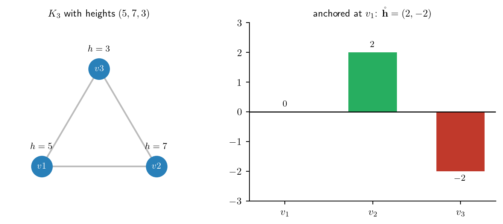
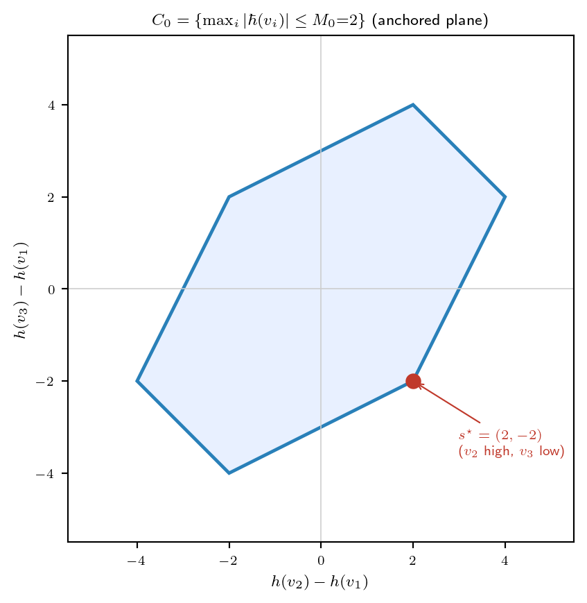
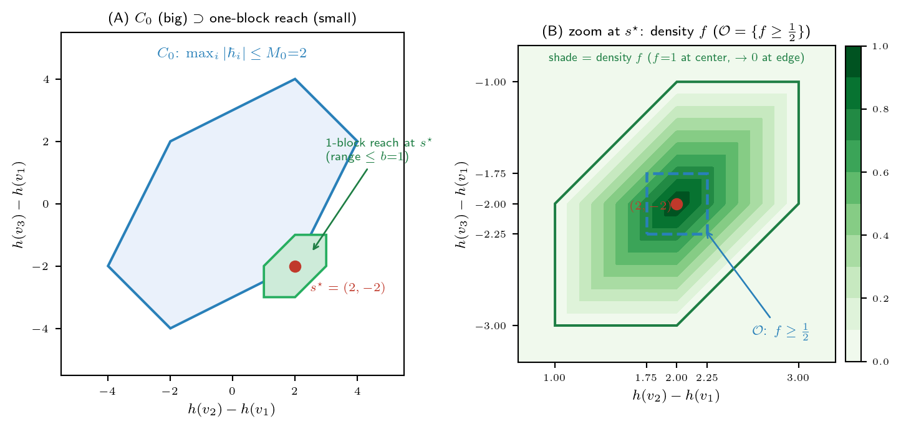
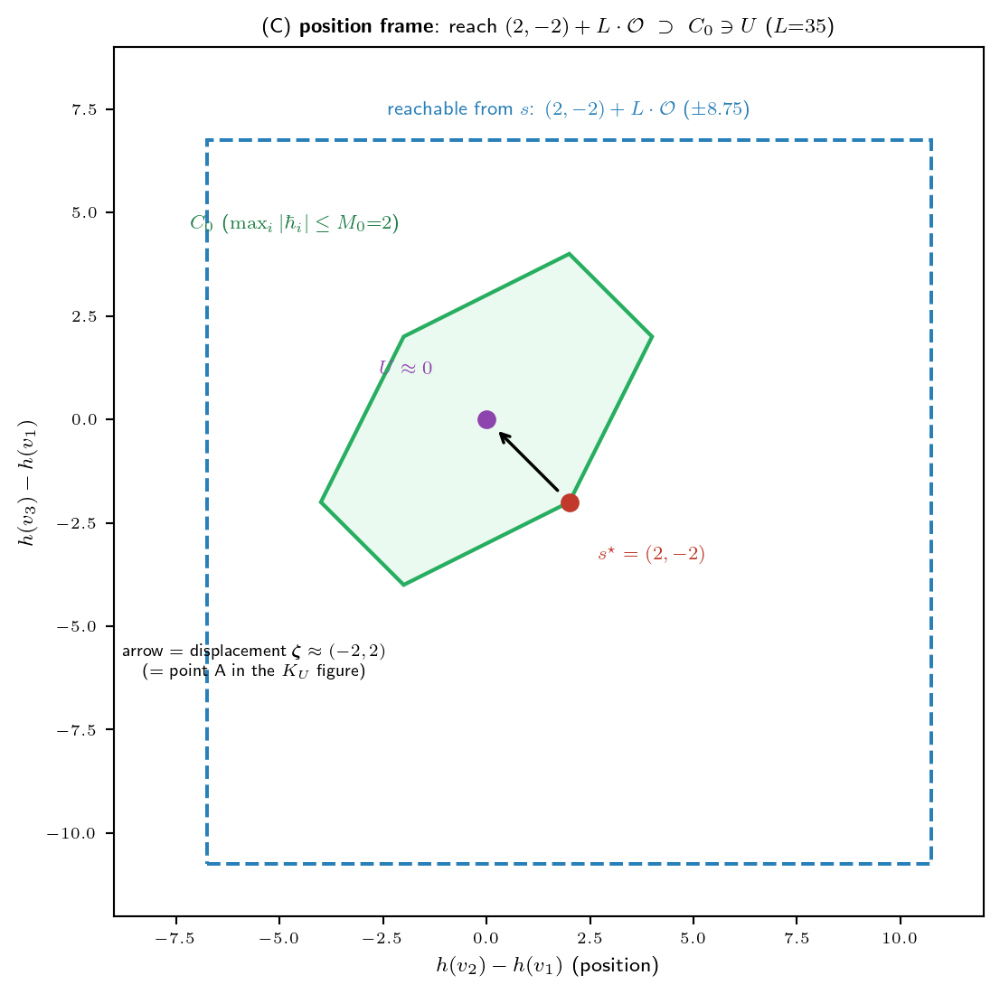
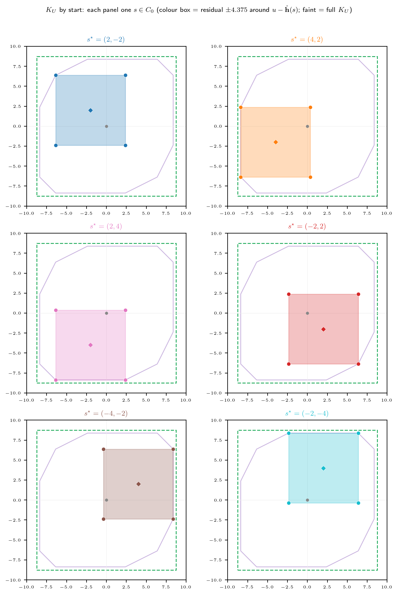
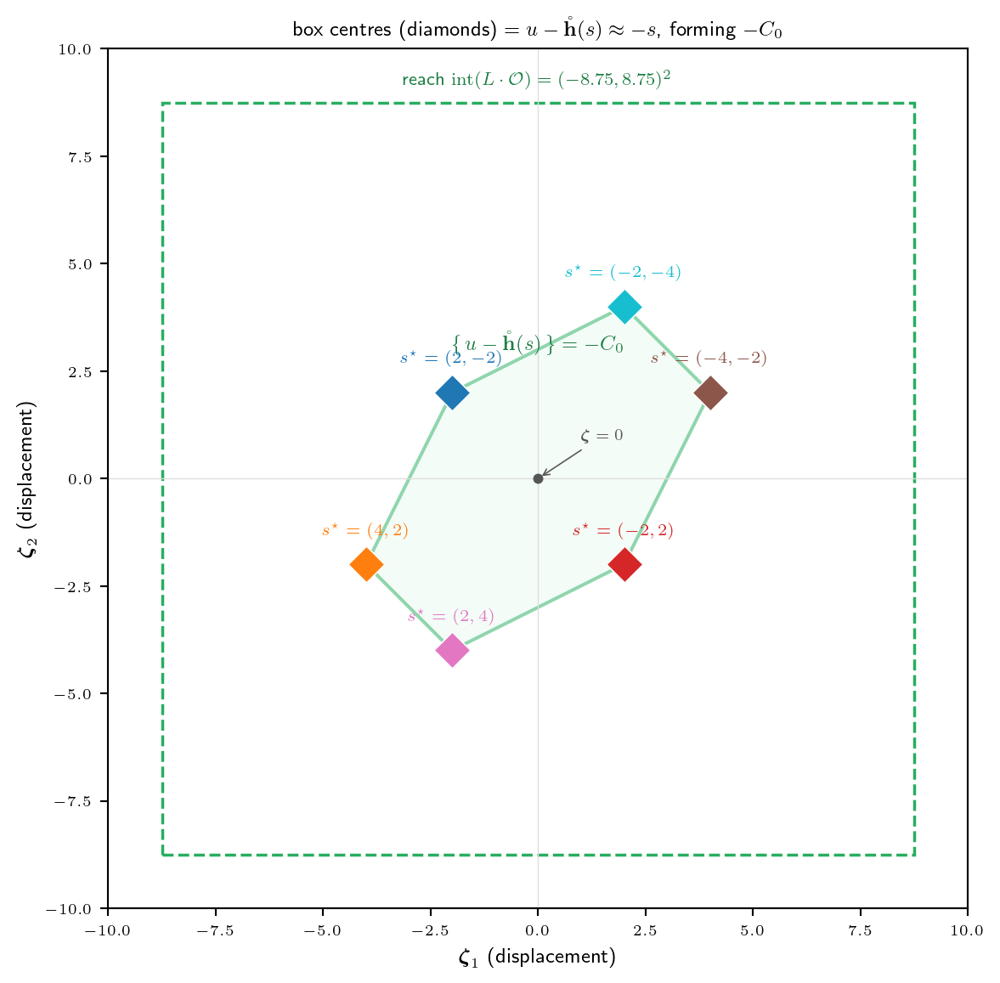
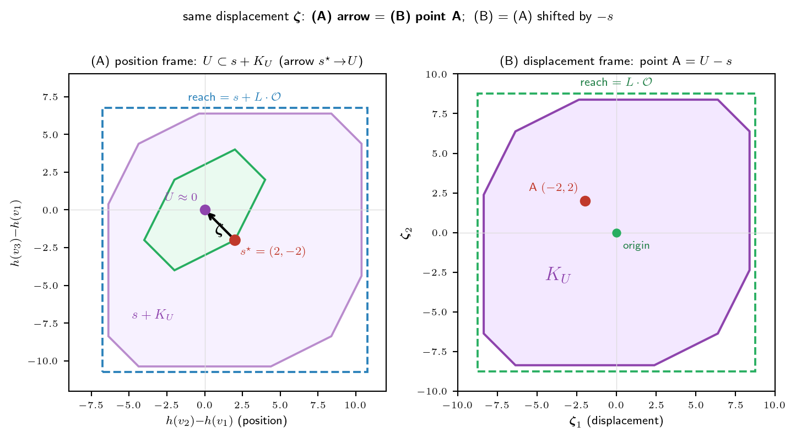
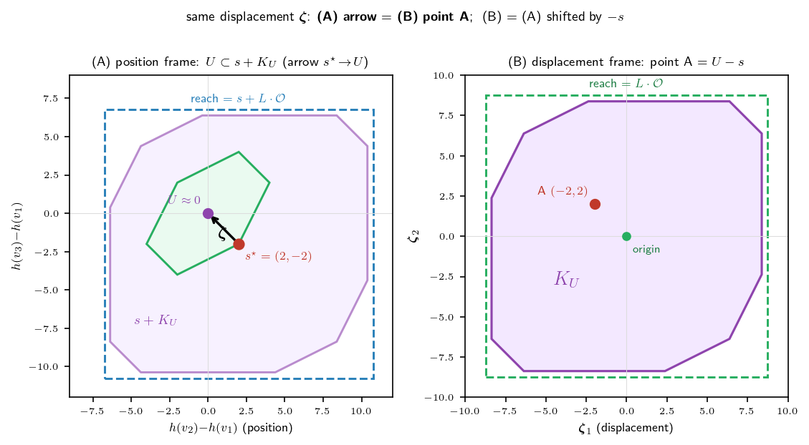
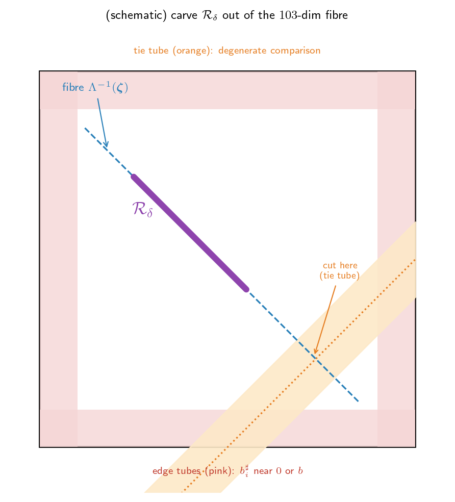

연구 ▷ HST ▷ \(C_0\)는 small set이다 — Doeblin minorization \(K_3\) 예제
먼저 무엇을 보일지 못박자 (결론부터). Lemma 8(§5.2, hst_AAA.tex)이 주장하는 건 한 줄이다 — 작은 집합 \(C_0\)가 라운드 스켈레톤 커널 \(P^{\star}\)에 대해 small이다: \[(P^{\star})^{\,nL}(s^{\star},\cdot) \;\geq\; \eta\,\nu \qquad (\forall\, s^{\star} \in C_0).\] 즉 \(C_0\) 안 어디서 출발하든 \(nL\)라운드 뒤 분포가 공통 바닥 \(\eta\,\nu\)를 깐다. 이것만 보이면 끝이다. 그래서 우리가 직접 구성할 것은 기준측도 \(\nu\), 스텝 수 \(m=nL\), 양수 \(\eta>0\) 셋뿐이고, 그러기 위해 \(\eta\)를 여러 양수 인자의 곱으로 쪼개 하나씩 “\(>0\)”을 확인한다.
이 글은 그 구성을 완전그래프 \(K_3\), \(b=1\), 시작 높이 \((5,7,3)\)으로 직접 따라간다(1·2부 통합). 1부에서 무대(상태공간·\(C_0\)·\(\mathcal{O}\)·\(U\))를 수치로 못박고, 2부에서 \(\eta\)를 만드는 인자 (i)~(v)를 확인한다. 이 인자들은 현재 정본(fold 후)에서 Lemma 8 한 보조정리 안의 두 Claim으로 묶여 있다 — (i)(ii)+분기가중 = Claim 1(이산 바닥), (iii) = Claim 2-a(fibre floor)+Claim 2-b(robust core), (iv) = Claim 2-b(transport). 엄밀한 일반 증명은 hst_AAA.tex Lemma 8 참조.
제1부. 무대 — 상태공간·\(C_0\)·\(\mathcal{O}\)·\(U\)
1부 안내: 2부의 다섯 인자를 확인하기 전에 무대를 잡는다 — 그래프 \(K_3\), small set 후보 \(C_0\), 도달역 \(\mathcal{O}\cdot L\cdot\mathcal{O}\), chamber \(U\)와 변위 목표 집합 \(K_U\).
§1. \(K_3\)와 상태공간
증명의 무대를 못박는다.
- 전장: 완전그래프 \(K_3\) — 봉우리 \(\{v_1, v_2, v_3\}\), 세 능선 모두 연결.
- 눈의 단위: \(b = 1\) (한 번에 쌓이는 눈 \(\sim \mathrm{Unif}(0,1)\)).
- 시작 고도: \(h(v_1) = 5,\quad h(v_2) = 7,\quad h(v_3) = 3.\)
용어 약속 (falls / non-fall). 매 라운드 각 노드에 눈이 한 덩이씩 새로 떨어진다. 이 노드별 강설 증분 \(b^{\sharp}_i \sim \mathrm{Unif}(0,b)\)이 fall(페이퍼 표기 위첨자 \(\sharp\))이다. 반면 강설 외 동역학(이웃 노드로 흘러내리는 flow, 뭉쳐 머무는 block 등)이 만드는 잔여 교란을 non-fall(위첨자 \(\flat\))이라 부른다. §5.2 증명의 핵심은 falls의 누적 변위가 non-fall 잔차(\(\leq\varepsilon_{\flat}\))를 흡수하고도 목표 chamber \(U\)에 양의 밀도로 도달한다는 것이다.
절대 고도는 잊어도 된다 — 증명에서 역할을 하는 건 고도차다. 상태(state)를 정의한다.
용어 약속 (라운드 스켈레톤 / 윗줄 \(\bar{\,\cdot\,}\) 표기). 연속적으로 굴러가는 눈 동역학을 한 라운드 단위로 띄엄띄엄 관찰한 이산 마르코프 체인을 라운드 스켈레톤(round skeleton)이라 한다 (뼈대만 남긴다는 뜻). 앞으로 윗줄 표기 — 상태공간 \(\mathcal{X}^{\star}\), 전이커널 \(P^{\star}\) — 는 모두 이 스켈레톤 체인의 것이다. 예컨대 \((P^{\star})^{\,nL}(s^{\star},\cdot)\)은 “\(s^{\star}\)에서 출발해 \(nL\)라운드 뒤 상태 분포”.
스켈레톤 상태공간은 \(\mathcal{X}^{\star} = \mathbb{R}^{n-1} \times V\) (\(n = 3\)이라 \(\mathbb{R}^2 \times V\)). 두 좌표는:
(1) 높이차 \(\mathring{\mathbf{h}}\) — \(v_1\)을 기준으로 뺀 anchored 높이차: \[\mathring{\mathbf{h}}(s^{\star}) = \bigl(h(v_2) - h(v_1),\ h(v_3) - h(v_1)\bigr) = (7-5,\ 3-5) = (2, -2).\]
(2) 현재 노드 \(X\) — walker가 지금 있는 노드 (예: \(v_1\)).
→ 우리 예제의 상태는 \(s^{\star} = \bigl((2,-2),\ v_1\bigr)\)이다. (\(\mathring{\mathbf{h}}\)가 절대높이 \(5,7,3\)을 안 기억해도 되는 이유: 눈은 모든 노드에 똑같이 와 닿는 게 아니라 높이차만 동역학에 들어오기 때문. 높이를 통째로 \(+10\) 해도 같은 상태.)
§2. Small set 후보 \(C_0\)
ergodic 정리(Meyn–Tweedie)를 쓰려면 가정 셋이 필요한데, 그중 H2 = “어떤 small set이 존재한다”를 이 절에서 댄다. small set의 정의는:
집합 \(C\)가 small이다 \(\iff\) 어떤 스텝 수 \(m\)과 0이 아닌 측도 \(\nu\)가 있어, \(C\) 안 어디서 출발하든 \(m\)스텝 뒤 분포가 공통 바닥 \(\nu\)를 깐다: \[P^m(s^{\star}, \cdot) \geq \nu(\cdot) \qquad (\forall\, s \in C).\]
먼저 \(s^{\star}\)가 어디의 원소인지 못박자. 라운드 스켈레톤의 상태공간은 \[\mathcal{X}^{\star} \;=\; \mathbb{R}^{n-1} \times V \;=\; \mathbb{R}^2 \times \{v_1, v_2, v_3\},\] 즉 상태는 \(s^{\star} = (\mathring{\mathbf{h}},\ X)\) — (높이차 벡터, 현재 노드) 쌍이다. 우리 예제에선 \[s^{\star} = \bigl((2,-2),\ v_1\bigr) \in \mathcal{X}^{\star}.\]
후보 small set은 높이가 너무 치우치지 않은 상태들이다. 페이퍼 정의를 따라, 평균 \(\bar h = \tfrac1n\sum_i h(v_i)\)로 중심화한 높이 \(\hbar(v_i) := h(v_i) - \bar h\)를 쓰고, 그 최대 절댓값을
\[M(s^{\star}) := \max_i \,|\hbar(v_i)| \qquad (\text{centered 높이 범위})\]
로 정의한다. (\(K_3\) 예제: \(\bar h = \tfrac{5+7+3}{3} = 5\), \(\hbar = (0, 2, -2)\), 따라서 \(M(s^{\star}) = 2\).) small set은 이 \(M\)의 sublevel:
\[C_0 = \{\, M \leq M_0 \,\} \times V, \qquad \text{이 예제 } M_0 := 2.\]
우리 \(s^{\star}\)는 \(M(s^{\star}) = 2 = M_0\)이라 \(C_0\) 경계(사실 꼭짓점) 위 — \(v_2\)가 천장, \(v_3\)가 바닥인 가장 치우친 worst case다. \(M\)은 anchored 좌표 \(\mathring{\mathbf{h}}=(u_1,u_2)\) (\(u_1{=}h(v_2){-}h(v_1)\), \(u_2{=}h(v_3){-}h(v_1)\))만으로도 쓸 수 있고(\(\hbar = (0,u_1,u_2)-\tfrac{u_1+u_2}{3}\mathbf{1}\)), \(C_0\)는 그 평면에서 육각형(\(\times V\), 꼭짓점 \(\pm(4,2),\pm(2,4),\pm(2,-2)\))으로 나타난다.

이 육각형이 \(C_0\)(\(\times\) 노드 \(V\)) — 중심화 높이 최대치 \(M(s^{\star})=\max_i|\hbar(v_i)|\)가 \(M_0=2\) 이하인 상태들이며, 출발 \(s^{\star}=(2,-2)\)는 \(\hbar=(0,2,-2)\)로 \(M=2=M_0\), 즉 \(C_0\)의 꼭짓점(=가장 불균형한 worst case: \(v_2\) 천장·\(v_3\) 바닥)에 놓인다.
§3. 도달역 \(\mathcal{O}\)·\(L\cdot\mathcal{O}\)와 chamber \(U\)
falls가 쓰는 영역을 두 종류로 나눠 잡는다 (전부 \(\mathring{\mathbf{h}}\)가 사는 \(\mathbb{R}^2\)의 부분집합이지만 역할이 다르다):
- (가) 증분/도달 영역 \(\mathcal{O}\), \(L\cdot\mathcal{O}\) — “한 블록/\(L\)블록이 \(\mathring{\mathbf{h}}\)를 얼마나 미는가” (현재 위치 \(p\)에 \(p+\mathcal{O}\)로 더해지는 변위). 아래 ①②.
- (나) chamber \(U\) — “궤적이 어디서 끝나는가” (원점 근처 최종 위치). 아래 ③.
둘 다 같은 박스 \(\mathcal{O}\) 안에 살지만(③에서 \(U \Subset \mathcal{O}\)), 변위(가) vs 위치(나)라 한 줄로 묶어 읽으면 안 된다 (이 혼동은 ③에서 다시 짚는다). \(b=1\), \(n=3\).
① \(\mathcal{O}\) — 한 블록 증분의 밀도가 양수 하한을 갖는 영역. \[\mathcal{O} := \{\,\|\boldsymbol{\zeta}\|_\infty < b/4\,\} = (-\tfrac14, \tfrac14)^2.\]
용어 정의 (“밀도 하한”). 한 블록의 차분벡터 \(\mathring{\mathbf{b}}^{\sharp} = (b^{\sharp}_2 - b^{\sharp}_1,\ b^{\sharp}_3 - b^{\sharp}_1)\) (\(b^{\sharp}_i \sim \mathrm{Unif}(0,b)\) 독립; 페이퍼 표기)의 확률밀도를 \(f\)라 하자. pushforward 보조정리가 \[f(\boldsymbol{\zeta}) \;\geq\; \frac{b^{1-n}}{2} = \frac12 \qquad (\forall\, \boldsymbol{\zeta} \in \mathcal{O})\] 를 보장한다. 동치로, 임의의 가측 \(B \subseteq \mathcal{O}\)에 대해 \(\mathbb{P}(\mathring{\mathbf{b}}^{\sharp} \in B) \geq \tfrac12\,|B|_{\mathrm{Leb}}\). 이 “밀도 \(f\)가 \(\mathcal{O}\) 위에서 양수 상수 \(\tfrac12\) 이상”이 앞으로 쓸 밀도 하한(floor)의 정확한 뜻이다 (양수란 게 핵심; 어디서도 \(0\)으로 안 꺼짐).
핵심은 \(\mathcal{O}\)가 위치가 아니라 “한 블록이 만드는 \(\mathring{\mathbf{h}}\)의 증분(이동량)”의 영역이라는 점이다. 우리 예제로 “\(\mathring{\mathbf{h}}(s^{\star})=(2,-2)\)가 한 블록 뒤 어떻게 바뀌나”를 직접 따라가자.
한 블록 = 각 노드에 fall 하나씩 (\(K_3\)이라 \(v_1, v_2, v_3\)에 각각 \(b^{\sharp}_1, b^{\sharp}_2, b^{\sharp}_3 \sim \mathrm{Unif}(0,1)\)). 그러면 높이가 \(h(v_i) \mapsto h(v_i) + b^{\sharp}_i\)로 오르고: \[ \begin{aligned} \mathring{\mathbf{h}}_{\text{new}} &= \bigl(\,(h(v_2){+}b^{\sharp}_2) - (h(v_1){+}b^{\sharp}_1),\ \ (h(v_3){+}b^{\sharp}_3) - (h(v_1){+}b^{\sharp}_1)\,\bigr)\\ &= \underbrace{\bigl(h(v_2){-}h(v_1),\ h(v_3){-}h(v_1)\bigr)}_{=\,(2,-2)} \;+\; \underbrace{\bigl(b^{\sharp}_2 - b^{\sharp}_1,\ b^{\sharp}_3 - b^{\sharp}_1\bigr)}_{=:\ \text{증분 }\mathring{\mathbf{b}}^{\sharp}}. \end{aligned} \]
즉 한 블록의 증분은 \(\mathring{\mathbf{b}}^{\sharp} = (b^{\sharp}_2 - b^{\sharp}_1,\ b^{\sharp}_3 - b^{\sharp}_1)\). \(v_1\)에 쌓인 \(b^{\sharp}_1\)이 모든 차이에서 상쇄돼, 절대 적립량은 안 남고 노드 간 상대 차이만 \(\mathring{\mathbf{h}}\)를 옮긴다. (그래서 pushforward 보조정리가 다루는 양이 deposit 자체가 아니라 차이벡터 \(\mathring{\mathbf{b}}^{\sharp}\)인 것.)
수치 예시 (\((2,-2)\)에서 출발):
- \(b^{\sharp} = (0.5,\ 0.6,\ 0.4)\) → 증분 \((0.6{-}0.5,\ 0.4{-}0.5) = (0.1, -0.1)\) → \((2.1, -2.1)\). 두 성분 다 \(|\cdot| < \tfrac14\) 라 \(\mathcal{O}\) 안 — 밀도 \(\geq \tfrac12\) 보장.
- \(b^{\sharp} = (0.7,\ 0.55,\ 0.85)\) → 증분 \((-0.15,\ 0.15)\) → \((1.85, -1.85)\). 역시 \(\mathcal{O}\) 안.
- \(b^{\sharp} = (0.5,\ 0.9,\ 0.3)\) → 증분 \((0.4,\ -0.2)\). 첫 성분 \(0.4 > \tfrac14\) 라 \(\mathcal{O}\) 밖 — 가능은 하지만 밀도 보장 안 됨.
위 밀도 하한의 유도 (왜 \(\mathcal{O}\) 위에서만 \(f \geq \tfrac12\)인가): 증분 밀도 \(f\)는 \(b^{\sharp}_1\)을 적분해 없앤 것인데, 모든 \(|b^{\sharp}_i - b^{\sharp}_1| < b/4\)일 때 적분 구간이 길이 \(\geq b/2\)를 품어 \(f \geq b^{1-n}/2\)로 떨어진다 (\(b{=}1, n{=}3\)이라 \(\tfrac12\)). 그 조건이 정확히 \(\mathring{\mathbf{b}}^{\sharp} \in \mathcal{O}\).
주의 — \(\mathcal{O}\)는 “한 블록으로 갈 수 있는 전부”가 아니다. 증분 \(\mathring{\mathbf{b}}^{\sharp} = (b^{\sharp}_2 - b^{\sharp}_1,\ b^{\sharp}_3 - b^{\sharp}_1)\)은 각 \(b^{\sharp}_i \in [0,b]\)라, 실제 도달 영역은 박스가 아니라 육각형 \[\{\, \boldsymbol{\zeta} : |\boldsymbol{\zeta}_1| \leq b,\ |\boldsymbol{\zeta}_2| \leq b,\ |\boldsymbol{\zeta}_1 - \boldsymbol{\zeta}_2| \leq b \,\}\] 이다 (증분도 높이차 벡터라 pairwise range \(\leq b=1\)). 예컨대 모서리 \((b, -b)\)는 \(b^{\sharp}_1\)을 공유하는 제약 때문에 도달 불가(\(|x-y|=2b > b\)). 박스 \(\mathcal{O}\)(한 좌표 \(\pm b/4\))는 그 육각형 안쪽의 밀도 \(\geq \tfrac12\) 보장 부분일 뿐이다. 증명이 박스만 쓰는 이유: 깔끔한 밀도 하한 \(b^{1-n}/2\)가 거기서만 나오기 때문 (육각형 안·박스 밖은 밀도가 양수지만 그 하한은 안 나옴). 아래 그림은 (A) 큰 \(C_0\) 안에 한 블록 도달역(작은 육각형)이 작게 들어있는 모습 — 둘 다 육각형이지만 정의가 다르다(\(C_0\)는 centered \(M\leq M_0{=}2\)·원점 중심, 도달역은 pairwise range \(\leq b{=}1\)·\(s{=}(2,-2)\) 중심) — 과 (B) 그 도달역 줌인(도달 육각형 \(\supset\) 밀도박스 \(\mathcal{O}\))을 보여준다.

한 블록은 \(\mathring{\mathbf{h}}\)를 육각형(range \(\leq b\))만큼 밀 수 있고, 그중 밀도 하한 \(f \geq \tfrac12\)을 갖는 부분이 박스 \(\mathcal{O}\)(한 좌표 \(\pm\tfrac14\))다. (\(L\)블록 누적 버전은 ② 참조.)
② \(L\cdot\mathcal{O}\) — \(L\)블록이 도달하는 영역 (Minkowski 합). 이하 도달역이라 부른다. \[L := \Bigl\lceil \tfrac{16M_0}{b} + 3 \Bigr\rceil, \qquad L\cdot\mathcal{O} := \underbrace{\mathcal{O}+\mathcal{O}+\cdots+\mathcal{O}}_{L\text{개}} = \bigl\{\, \boldsymbol{\zeta} : \|\boldsymbol{\zeta}\|_\infty < \tfrac{Lb}{4} \,\bigr\}.\]
정의 (도달역). 한 블록 증분이 밀도바닥 박스 \(\mathcal{O}\) 안에 있을 때, \(L\)블록을 누적한 총변위가 떨어질 수 있는 곳이 곧 Minkowski 합 \(L\cdot\mathcal{O}\)다. 이 집합을 도달역(reachable region)이라 부른다 — “\(L\)번 걸어서 닿을 수 있는 모든 점”. 출발점 \(s^{\star}\)에서 시작하면 도달역은 \(s^{\star} + L\cdot\mathcal{O}\)로 평행이동한다.
\(M_0 = 2\), \(b = 1\)이라 \(L = \lceil 16\cdot 2 + 3 \rceil = 35\). 그러면 \(L\cdot\mathcal{O} = (-\tfrac{L}{4}, \tfrac{L}{4})^2 = (-8.75, 8.75)^2\) — 출발 \(\mathring{\mathbf{h}}(s^{\star})=(2,-2)\)를 원점 근처로 끌어내릴 만큼 넉넉하다. (falls가 채울 변위 \(\boldsymbol{\zeta} = u - \mathring{\mathbf{h}}(s^{\star}) - r \approx (0,0)-(2,-2) = (-2,2)\)가 \(\pm 8.75\) 안에 푹 들어옴. 여기 \(r\)은 non-fall 잔차로 ③에서 정의·범위를 못박는다.)

한 블록은 \(\mathcal{O}\)(\(\pm\tfrac14\))짜리 작은 걸음이지만, \(L=35\)번 누적하면 도달 영역이 \(\pm 8.75\)까지 커져 — 출발 \(s^{\star}=(2,-2)\)에서 목표 \(U(\approx 0)\)가 그 안에 푹 들어온다 (위 그림).
밀도 하한의 L블록 버전 (정의). \(L\)블록 총 차분 \(Y = \sum_{k=1}^{L} Y_k\) (독립 합; \(Y_k\) = \(k\)번째 블록의 차분벡터 \(\mathring{\mathbf{b}}^{\sharp}\))의 밀도는 \(L\)겹 합성곱 \(f^{*L}\)이고, \(\operatorname{int}(L\cdot\mathcal{O})\)의 임의의 컴팩트 부분집합 \(K\)에 대해 양수 상수 \(c_K\)가 존재해 \[f^{*L}(z) \;\geq\; c_K \;>\; 0 \quad (z \in K), \qquad\text{즉}\qquad \mathbb{P}(Y \in B) \;\geq\; c_K\,|B|_{\mathrm{Leb}}\ \ (B \subseteq K).\]
Note🔽 접어둔 군사 계산 — \(L\)겹 바닥 \(c_K\)는 얼마나 작나 (사실 안 작다)
주의 세 가지: (i) \(c_K\)는 한 블록의 \(\tfrac12\)이 아니다 (합성곱은 곱이 아니라 적분이라 \((\tfrac12)^L\)과 다름). (ii) floor는 \(L\cdot\mathcal{O}\) 전체가 아니라 경계에서 떨어진 컴팩트 \(K\) 위에서만 — \(f^{*L}\)은 \(L\cdot\mathcal{O}\) 경계로 갈수록 \(0\)으로 떨어진다. (iii) \(c_K\)의 크기 — 사실 \((\tfrac12)^L\)보다 훨씬 크다. Lemma 8 Claim 2-a가 증명하는 하한 \(c_K \geq (\tfrac{b^{1-n}}{2})^{L}(\omega_d s^d)^{L-1}\) 은 “\(c_K>0\)”만 보이려는 매우 loose한 과소평가(지수적으로 작은 값)일 뿐, 실제 \(c_K\)는 이보다 한참 크다. 합 \(Y\)의 분포는 평균 \(0\) 주위로 표준편차 \(\sqrt{L/6}\approx 2.4\) 퍼지고(CLT), 타깃(\(\|\boldsymbol{\zeta}\|_\infty\lesssim 8.6\))은 그 bulk에 있어 밀도가 \(f^{*L} \sim L^{-d/2}\) — 즉 다항적으로만 작다 (\(\sim 1/L\)). 정리하면 \((\tfrac12)^L\)(loose 하한) \(\ll\) 실제 \(c_K \sim L^{-d/2}\). 증명엔 \(c_K>0\)만 필요해 loose bound로 충분할 뿐.
③ \(U\) — 도착 chamber를 증분 박스 \(\mathcal{O}\) 안에 직접 잡는다. falls가 최종적으로 떨어뜨릴 위치(chamber) \(U\)는 증분 박스 \(\mathcal{O}\) 안에 직접 둔다: \[U \Subset \mathcal{O} = \{\,\|\boldsymbol{\zeta}\|_\infty < b/4\,\} \qquad (\text{즉 } \|u\|_\infty < b/4 = 0.25).\] 여기서 한 번 짚고 가자: \(U\)는 ① \(\mathcal{O}\)와 같은 박스에 살지만 역할이 정반대다. \(\mathcal{O}\)는 “한 블록이 미는 증분”의 영역이고, \(U\)는 “궤적이 끝나는 위치”다. falls가 “\(U\)만큼 민다”는 게 전혀 아니고 (falls는 여전히 \(\mathcal{O}\)/\(L\cdot\mathcal{O}\) 전체로 움직인다), \(U\)는 도착점 후보들의 작은 집합이다. 그 역할은 하나 — \(U\)를 도달역 안쪽에 충분히 작게 가두는 것:
\(U \Subset \mathcal{O}\)이면 목표 집합 \(K_U = \{u - \mathring{\mathbf{h}}(s^{\star}) - r\}\)가 도달역 내부에 컴팩트하게 든다: \(K_U \Subset \operatorname{int}(L\cdot\mathcal{O})\).
(또 다른 \(U\) 조건인 등호 초평면 회피는 박스 크기와 무관하므로 ④에서 다룬다. 예전 판본은 \(U\)를 더 작은 \(\mathcal{O}^\dagger{=}\{\|\boldsymbol{\zeta}\|_\infty<b/16\}\)에 가뒀으나, \(L\)을 \(\lceil 16M_0/b{+}3\rceil\)로 키워 \(U\Subset\mathcal{O}\)만으로 containment가 되도록 정리됐다 — 정본 정합.)
\(K_U\)란 — falls가 맞혀야 할 변위 목표 전체 (“숙제 목록”). \(K_U\)는 한 점이 아니라 집합인데, 세 조각이 각각 범위를 갖기 때문이다:
- \(u \in U\) — 도착지(chamber)가 한 점이 아니라 \(U\) 전체에 퍼짐 (기준측도 \(\nu=\mathrm{Unif}(U)\)라 \(U\)의 모든 점을 덮어야).
- \(s^{\star} \in C_0\) — 출발 상태가 \(C_0\) 안 어디든 (minorization은 \(\forall s\)); \(s^{\star}\)마다 \(\mathring{\mathbf{h}}(s^{\star})\)가 다름.
- \(r\) (\(\|r\|_\infty \leq Lb/8\)) — non-fall 잔차가 그때그때 다름 (정체는 바로 아래).
이 \((u,s,r)\) 모든 조합이 변위 \(\boldsymbol{\zeta} = u-\mathring{\mathbf{h}}(s^{\star})-r\) 하나씩을 만들고, 그 전부의 모임이 \(K_U\)다. 즉 falls의 “숙제 목록” — minorization이 성립하려면 falls가 이 목록의 모든 점을 밀도 깔며 맞혀야 한다 (하나라도 못 맞히면 그 출발·도착·잔차 조합에서 floor가 깨짐). 그래서 “\(K_U \Subset \operatorname{int}(L\cdot\mathcal{O})\)”는 숙제 목록 전체가 도달역 안쪽에 든다는 뜻이고, 그래야 Lemma 8의 Claim 2-a(L겹 합성곱 하한)가 모든 목표에 fibre floor \(m_0\)을 깔아준다.
이 식을 거꾸로 읽으면 — falls가 통제하는 건 \(\boldsymbol{\zeta}\) 하나뿐. \(\boldsymbol{\zeta} = u - \mathring{\mathbf{h}}(s^{\star}) - r\)를 \(u\)에 대해 풀면
\[u \;=\; \underbrace{\mathring{\mathbf{h}}(s^{\star})}_{\text{출발 현황}} \;+\; \underbrace{r}_{\text{non-fall 부작용 (side effect)}} \;+\; \underbrace{\boldsymbol{\zeta}}_{\text{fall 액션 (} \sum_k \mathring{\mathbf{b}}^\sharp_k \text{)}},\]
즉 최종 착지 위치 \(u\) = (출발 현황) \(+\) (non-fall 부작용) \(+\) (fall 액션)이다. 앞 두 항은 falls가 못 바꾼다 — \(\mathring{\mathbf{h}}(s^{\star})\)는 이미 주어진 출발점, \(r\)은 HST 알고리즘을 진행하며 얻는 랜덤성에 의해 결정되는 부작용. falls가 손댈 수 있는 건 세 번째 항 \(\boldsymbol{\zeta}\) (\(=L\)블록 fall 증분의 합 \(\sum_k \mathring{\mathbf{b}}^\sharp_k\))뿐이다. 그래서 “주어진 \(\mathring{\mathbf{h}}(s^{\star})\)·\(r\) 아래 \(u\)에 정확히 착지하려면 falls가 만들어내야 할 증분 합”이 곧 표적 \(\boldsymbol{\zeta} = u - \mathring{\mathbf{h}}(s^{\star}) - r\)이고, 이게 falls의 명중 목표다.
잔차 \(r\)은 어디서 나오나 — “그렇다고 치는” 게 아니다. \(r\)은 자유롭게 고르는 값이 아니라, \(nL\)라운드 동안 non-fall(flow·block) 스텝이 높이차에 보탠 누적 변위다 (페이퍼: \(r = \Lambda^{\flat}_{\mathbf{v}^\flat}\mathbf{b}^\flat\), non-fall 증분 \(\mathbf{b}^\flat\)의 결정론적 선형 함수 — HST 알고리즘을 진행하며 얻는 랜덤성에 의해 결정된다). 상한 \(\|r\|_\infty \leq \tfrac{Lb}{8}\)은 임의로 박은 게 아니라 “스텝 수 \(\times\) 한 스텝 크기”로 나온다. 증명이 non-fall을 억누른 사건 \(\mathcal{A}^\flat\) 위에서만 작업하므로 각 스텝이 \(\leq \varepsilon_{\flat}\)로 작다:
| 양 | 뜻 | \(K_3\) 값 |
|---|---|---|
| \(nLT_{\max}\) | non-fall 스텝 최대 개수 | \(3\cdot 35\cdot 6 = 630\) |
| \(\varepsilon_{\flat}\) | 한 스텝 크기 상한 (\(\leq \tfrac{b}{8nT_{\max}}\)) | \(\leq \tfrac{1}{144} \approx 0.0069\) |
| \(\|r\|_\infty \leq nLT_{\max}\,\varepsilon_{\flat}\) | 누적 잔차 상한 | \(\leq 630 \times 0.0069 = 4.375 = \tfrac{Lb}{8}\) |
즉 \(4.375\)는 “630개의 미세한 flow·block 밀림(각 \(\leq 0.0069\))이 최악으로 한 방향 누적됐을 때”의 상한이지 아무 값이나가 아니다. \(K_U\)가 \(\|r\|_\infty \leq \tfrac{Lb}{8}\) 공 전체를 덮는 이유도 — 우리가 \(r\)을 고르는 게 아니라 HST 알고리즘 진행 중 어떤 랜덤성이 어떤 \(r\)을 줄지 몰라 가능한 모든 경우를 커버해야 하기 때문(worst-case 합집합). 그리고 각 \(r\)은 버려지지 않고, fall 적립을 강체 평행이동 \(\mathbf{b}^\sharp \mapsto \mathbf{b}^\sharp - Q\,\Lambda^{\flat}_{\mathbf{v}^\flat}\mathbf{b}^\flat\) 해서 fibre를 \(-r\)만큼 밀어 정확히 흡수한다 (결산표 (iv) transport).
주의: \(K_U \neq U\). \(U\)는 작은 도착지(\(\pm0.006\)), \(K_U\)는 그걸 \(-\mathring{\mathbf{h}}(s^{\star})\)(\(C_0\)만큼)·\(-r\)(잔차만큼)로 부풀린 큰 변위 목표 집합(\(\pm8.6\), 약 \(1400\times\)).
숙제 목록 \(K_U\)를 숫자로 — 출발 \(6\) × 잔차 \(5\) = \(30\)개 곱집합. \(u \in U\)는 거의 한 점(\(\approx (0.003,\,0.005)\))이라 고정하고, 출발 \(s^{\star}\)는 \(C_0\)의 6개 꼭짓점, 잔차 \(r\)은 박스 \(\|r\|_\infty\leq\tfrac{Lb}{8}=4.375\)의 중심+네 모서리 — 둘의 곱집합이 변위 \(\boldsymbol{\zeta} = u - \mathring{\mathbf{h}}(s^{\star}) - r\)로 \(K_U\)를 채운다 (아래 30행 = 위 3×2 그림의 30점):
| 출발 \(s^{\star}\) | 잔차 \(r\) | 변위 \(\boldsymbol{\zeta} = u - \mathring{\mathbf{h}}(s^{\star}) - r\) | \(\|\boldsymbol{\zeta}\|_\infty\) |
|---|---|---|---|
| \((2,-2)\) | \((0,0)\) | \((-1.997,\ 2.005)\) | \(2.01\) |
| \((4.375,-4.375)\) | \((-6.372,\ 6.380)\) | \(6.38\) | |
| \((-4.375,4.375)\) | \((2.378,\ -2.370)\) | \(2.38\) | |
| \((-4.375,-4.375)\) | \((2.378,\ 6.380)\) | \(6.38\) | |
| \((4.375,4.375)\) | \((-6.372,\ -2.370)\) | \(6.37\) | |
| \((4,2)\) | \((0,0)\) | \((-3.997,\ -1.995)\) | \(4.00\) |
| \((4.375,-4.375)\) | \((-8.372,\ 2.380)\) | \(8.37\) | |
| \((-4.375,4.375)\) | \((0.378,\ -6.370)\) | \(6.37\) | |
| \((-4.375,-4.375)\) | \((0.378,\ 2.380)\) | \(2.38\) | |
| \((4.375,4.375)\) | \((-8.372,\ -6.370)\) | \(8.37\) | |
| \((2,4)\) | \((0,0)\) | \((-1.997,\ -3.995)\) | \(4.00\) |
| \((4.375,-4.375)\) | \((-6.372,\ 0.380)\) | \(6.37\) | |
| \((-4.375,4.375)\) | \((2.378,\ -8.370)\) | \(8.37\) | |
| \((-4.375,-4.375)\) | \((2.378,\ 0.380)\) | \(2.38\) | |
| \((4.375,4.375)\) | \((-6.372,\ -8.370)\) | \(8.37\) | |
| \((-2,2)\) | \((0,0)\) | \((2.003,\ -1.995)\) | \(2.00\) |
| \((4.375,-4.375)\) | \((-2.372,\ 2.380)\) | \(2.38\) | |
| \((-4.375,4.375)\) | \((6.378,\ -6.370)\) | \(6.38\) | |
| \((-4.375,-4.375)\) | \((6.378,\ 2.380)\) | \(6.38\) | |
| \((4.375,4.375)\) | \((-2.372,\ -6.370)\) | \(6.37\) | |
| \((-4,-2)\) | \((0,0)\) | \((4.003,\ 2.005)\) | \(4.00\) |
| \((4.375,-4.375)\) | \((-0.372,\ 6.380)\) | \(6.38\) | |
| \((-4.375,4.375)\) | \((8.378,\ -2.370)\) | \(8.38\) | |
| \((-4.375,-4.375)\) | \((8.378,\ 6.380)\) | \(8.38\) | |
| \((4.375,4.375)\) | \((-0.372,\ -2.370)\) | \(2.37\) | |
| \((-2,-4)\) | \((0,0)\) | \((2.003,\ 4.005)\) | \(4.01\) |
| \((4.375,-4.375)\) | \((-2.372,\ 8.380)\) | \(8.38\) | |
| \((-4.375,4.375)\) | \((6.378,\ -0.370)\) | \(6.38\) | |
| \((-4.375,-4.375)\) | \((6.378,\ 8.380)\) | \(8.38\) | |
| \((4.375,4.375)\) | \((-2.372,\ -0.370)\) | \(2.37\) |
(\(u\)는 chamber 중심 \(\tfrac{b}{128n}(1,2) = (\tfrac1{384},\tfrac1{192}) \approx (0.003,\,0.005)\)로 고정 — 정확히 \(0\)이 아니라 등호 초평면을 피한 미세 offset이라, 그 꼬리가 \(\boldsymbol{\zeta}\)의 셋째 자리에 남는다. 잔차 \(r\)의 부호 조합에 따라 같은 크기인데도 \(\|\boldsymbol{\zeta}\|\)가 \(\sim2.4\) vs \(\sim8.4\)로 갈린다: \(u-\mathring{\mathbf{h}}(s^{\star})\)를 한쪽으로 밀면 커지고 상쇄하면 작아진다.)
Important
이 표를 오해 없이 읽기 — 30점은 “집합 \(K_U\)의 표본·눈금”이지 “고른 표적 리스트”가 아니다. (i) \(r\)값 \(0,\pm4.375\)는 우리가 고른 게 아니라 잔차 박스의 중심·네 모서리를 집어 범위를 보인 것 — 실제 \(r\)은 HST 알고리즘을 진행하며 얻는 랜덤성에 의해 결정되고 우리는 바운드만 안다. (ii) \(u\)도 편의상 중심에 고정했지만 실제론 \(U\) 전체를 훑는다. (iii) 따라서 진짜 \(K_U\)는 점 30개가 아니라 위 그림의 연속 집합이고, falls는 이 점들을 명중하는 게 아니라 영역 전체에 밀도를 깐다(한 점은 측도 \(0\)이라 애초에 명중 대상이 아니다).
\(30\)점 모두 \(\|\boldsymbol{\zeta}\|_\infty\leq8.38<8.75\) — “\(-\mathring{\mathbf{h}}(s^{\star})\) (출발, 최대 \(2M_0{=}4\))”와 “\(-r\) (잔차, 최대 \(4.375\))” 두 손잡이가 점만 한 \(U\)를 \(\pm8.6\)짜리 큰 집합 \(K_U\)로 부풀려도 도달역 안에 여유 두고 든다.

6개 패널 = 6개 출발 \(s^{\star}\)(\(C_0\)의 꼭짓점). 각 패널에서 색 박스는 그 출발의 표적 모임 — 중심 \(u-\mathring{\mathbf{h}}(s^{\star})\approx-s\), 한 변 \(\pm Lb/8=\pm4.375\)인 잔차 박스(점 5개 = 중심+네 모서리), 그리고 연한 보라 외곽선이 전체 \(K_U\)(6패널 박스의 합집합) 참조용. 출발마다 박스가 \(-s\) 위치로 옮겨다니며 \(K_U\)를 채우는 게 한눈에 보인다. \(6\times5=30\)개 표본 모두 \(\|\boldsymbol{\zeta}\|_\infty\leq8.38<8.75\)라 도달역(초록 점선) 안에 여유 \(\sim0.37\) 두고 든다.
각 패널의 다이아몬드는 그 박스의 중심 \(u-\mathring{\mathbf{h}}(s^{\star})\approx-s\)다. 이 6개 중심만 한 그림에 모으면 — 출발 \(s^{\star}\)가 \(C_0\) 꼭짓점이라 \(-s\)도 \(C_0\) 꼭짓점이므로 — 다이아몬드 6개가 그대로 \(C_0\) 육각형을 이룬다 (잔차 박스를 떼고 “출발 손잡이만” 본 그림):

다이아몬드 6개(\(=\)출발 손잡이만)가 \(-C_0\) 육각형 꼭짓점에 놓이고, 여기에 각 다이아몬드마다 \(\pm4.375\) 잔차 박스를 씌우면 위 3×2의 전체 \(K_U\)가 된다. 아래 접이식에 삼각부등식 증명을 둔다.
좌표계 주의 — 이 그림은 §2②의 도달역 그림과 축이 다르다. ②(LO_reach)는 위치 공간(축 \(h(v_i){-}h(v_1)\), 도달역이 출발 \(s^{\star}\) 중심 \(s^{\star}+L\cdot\mathcal{O}\))이고, 이 그림은 변위 공간 \(\boldsymbol{\zeta}\)(원점 중심 \(\operatorname{int}(L\cdot\mathcal{O})\))다. 둘은 \(\boldsymbol{\zeta} = (\text{도착}) - (\text{출발 } s)\)로 연결돼 — ②의 화살표 하나(변위 \(\approx(-2,2)\))가 여기선 점 하나(A)다. “위치 = $s^{} + $ 변위”라, 변위 그림은 위치 그림을 \(s^{\star}\)만큼 원점으로 끌어온 셈.
두 좌표계를 한 그림에 — 같은 변위, \(-s\) 평행이동. 아래 통일 비교에서 (A) 위치 공간의 화살표 \(s^{\star}\to U\)가 (B) 변위 공간의 점 A로 그대로 옮겨간다. (B)는 (A)를 “출발 \(s^{\star}\)를 원점으로” 끌어온 것 — 도달역 박스도 \(s^{\star}+L\cdot\mathcal{O}\)(A)에서 \(L\cdot\mathcal{O}\)(B)로 같이 평행이동한다.

(A)에서 화살표가 가리키는 변위가 (B)에서 점 A로 찍힌다. (A)의 보라 영역이 \(s^{\star}+K_U\) — 즉 \(K_U\)(변위)를 출발 \(s^{\star}\)만큼 평행이동한 위치 집합이고, 도착 \(U\)(\(\approx\)원점)가 그 안에 든다(\(U \subset s^{\star}+K_U\), \(u = \mathring{\mathbf h}(s^{\star})+\boldsymbol{\zeta}+r\)이라). \(U\)가 변위 그림 (B)에 직접 안 찍히는 이유가 이것 — \(U\)는 위치라 \(K_U\)와 만나려면 \(s^{\star}\)만큼 옮겨야 한다. 단, (B)의 \(K_U\)는 이 한 출발 \(s^{\star}\)만이 아니라 \(C_0\)의 모든 출발까지 union한 집합이라 (A)의 화살표 하나보다 크다 — 출발이 \(C_0\) 안에서 움직이면 (B)의 점도 \(K_U\) 안을 훑는다.
Note🔽 접어둔 군사 계산 — 왜 숙제 목록 \(K_U\)가 도달역 안에 드나 (삼각부등식 + \(K_3\) 수치)
목표 집합의 한 점은 세 조각의 합이다: \[\boldsymbol{\zeta} \;=\; \underbrace{u}_{\in\, U \Subset \mathcal{O}} \;-\; \underbrace{\mathring{\mathbf{h}}(s^{\star})}_{s\,\in\, C_0} \;-\; \underbrace{r}_{\text{잔차}}.\] 각 조각의 크기는: \(\|u\|_\infty < \tfrac{b}{4}\) (\(U \Subset \mathcal{O}\)), \(\|\mathring{\mathbf{h}}(s^{\star})\|_\infty \leq 2M_0\) (각 anchored 차이 \(|\hbar(v_i){-}\hbar(v_1)| \leq 2M \leq 2M_0\)), \(\|r\|_\infty \leq \tfrac{Lb}{8}\) (잔차 예산). 삼각부등식으로 \[\|\boldsymbol{\zeta}\|_\infty \;\leq\; \|u\|_\infty + \|\mathring{\mathbf{h}}(s^{\star})\|_\infty + \|r\|_\infty \;<\; \frac{b}{4} + 2M_0 + \frac{Lb}{8}.\] 이게 \(\operatorname{int}(L\cdot\mathcal{O}) = \{\|\cdot\|_\infty < \tfrac{Lb}{4}\}\) 안에 들려면 \(< \tfrac{Lb}{4}\)여야 하는데, \(L = \lceil 16M_0/b + 3\rceil\)이라 \(\tfrac{Lb}{8} \geq 2M_0 + \tfrac{3b}{8}\)이고 남는 margin이 \[\frac{Lb}{4} - \Bigl(\frac{b}{4} + 2M_0 + \frac{Lb}{8}\Bigr) = \frac{Lb}{8} - \frac{b}{4} - 2M_0 \;\geq\; \bigl(2M_0 + \tfrac{3b}{8}\bigr) - \tfrac{b}{4} - 2M_0 = \frac{b}{8} \;>\; 0.\] 양의 margin(\(b/8\))이 남으니 \(K_U\)가 경계에서 떨어진 채(컴팩트하게) \(\operatorname{int}(L\cdot\mathcal{O})\) 안에 든다.
K3 수치로 확인 (\(M_0 = 2\), \(b = 1\), \(L = 35\)): \[\|u\|_\infty < \tfrac{1}{4} = 0.25, \quad \|\mathring{\mathbf{h}}(s^{\star})\|_\infty \leq 2M_0 = 4, \quad \|r\|_\infty \leq \tfrac{35}{8} = 4.375\] \[\Rightarrow \|\boldsymbol{\zeta}\|_\infty < 0.25 + 4 + 4.375 = 8.625 \;<\; \tfrac{Lb}{4} = 8.75,\] margin \(= 8.75 - 8.625 = 0.125\,(= b/8)\). 즉 목표 전체가 도달역 \(\operatorname{int}(L\cdot\mathcal{O})\) 안에 여유 \(b/8\) 두고 들어간다. (\(L\)의 상수를 \(+1\)이 아니라 \(+3\)으로 키운 게 바로 이 \(b/8\) 여유를 — \(U\)를 \(\mathcal{O}^\dagger\) 없이 \(\mathcal{O}\) 안에 직접 둬도 — 보장하는 장치다.)
- chamber \(U\)(초록)는 원점 근처의 아주 작은 공이고(\(\mathcal{O}=\pm0.25\) 박스 안에 들지만 그 박스는 너무 커서 화면 밖), 등호면 셋이 원점을 관통한다. (B) 더 줌인하면 \(U\)가 등호면들에서 \(\kappa_U\) 떨어져 있다. 이 그림은 도착(chamber) 공간이라 원점 기준이다 (한 블록 reach의 \(\mathcal{O}\)는 §2①의 \(s^{\star}\)-기준 그림 참조).
④ \(U\) — 실제 목표 chamber. (chamber란 등호 초평면 \(\{\widetilde{u}_i = \widetilde{u}_j\}\)들로 잘려 나온 영역 하나 — 그 안에서는 노드 높이들의 대소 순서가 고정된 cell이다. 순서가 안 바뀌어야 fall이 목표를 일관되게 맞힐 수 있다.) \(U\)는 증분 박스 \(\mathcal{O}\) 안의 작은 \(\ell^\infty\)-공인데, 이 chamber 안에 들도록(=final-equality 초평면을 피해서) 잡는다. anchored 전체높이 \(\widetilde{u} = (0, u_1, u_2)\) (여기 \(u=(u_1,u_2)\in U\))의 세 등호면 \[\{u_1 = 0\},\quad \{u_2 = 0\},\quad \{u_1 = u_2\}\] 위에선 fall이 목표를 robust하게 못 맞힌다 (퇴화 비교). 그래서 이 셋에서 떨어진 곳에 중심을 둔다: \[\text{중심} = \tfrac{b}{128n}(1, 2) = \bigl(\tfrac{1}{384}, \tfrac{1}{192}\bigr) \approx (0.0026,\ 0.0052), \qquad \text{반경 } r_U = \tfrac{1}{1536}.\] 이 \(U\)는 세 초평면에서 최소 \(\kappa_U = \tfrac{1}{768} \approx 0.0013\) 떨어져 있다 (\((\ast)\) 조건). 최종 기준측도가 바로 이 \(U\) 위의 균등측도: \(\nu = \mathrm{Unif}(U)\otimes\delta_{v_3}\).
Remark — \(U\)가 원점일 이유는 없다 (원점은 편의·안전 선택). \(U\)를 원점 근처에 둔 게 필연처럼 보이지만, 실제로 \(U\)에 걸리는 제약은 둘뿐이고 둘 다 “\(U=\) 원점”을 요구하지 않는다.
- 모든 \(s^{\star}\in C_0\)에서 도달 + density floor. \(U\)는 \(C_0\) 안 어느 출발점에서도 밀도를 깔며 닿아야 하므로 (도달역 \(\approx s^{\star} + L\cdot\mathcal{O}\)), \[U \subset \bigcap_{s^{\star}\in C_0}\bigl(s^{\star} + L\cdot\mathcal{O}\bigr).\] \(C_0\)가 원점 대칭이라 이 교집합은 원점 중심이지만 반경이 \(\sim 3M_0\)로 크다 — \(U\)는 그 큰 영역 어디든 가능하지 원점에 붙을 필요가 없다.
- 등호 초평면 회피 (\(\kappa_U\)). ties \(\{\widetilde{u}_i=\widetilde{u}_j\}\)만 피하면 된다.
어느 제약도 “\(U=\) 원점”을 강제하지 않는다. 그럼 왜 논문은 원점 근처에 두나?
- 원점 \(=\) 대칭 중심 \(=\) 최대 여유점. \(\bigcap_{s}(s^{\star}+L\cdot\mathcal{O})\)가 원점 중심이라 원점 근처가 도달역 경계에서 가장 멀다 — “아무 데나 둬도 되지만 가장 안전한 데” 둔 것.
- \(U \Subset \mathcal{O}\) (b/4)면 충분. containment \(K_U \Subset \operatorname{int}(L\cdot\mathcal{O})\)는 \(\|u\|_\infty < b/4\)로 충분하다 (위 삼각부등식, margin \(b/8\)). 옛 판본은 \(U\)를 더 작은 \(\mathcal{O}^\dagger{=}\{b/16\}\)에 가뒀지만, \(L\)의 상수를 \(+3\)으로 키워 그 과조임을 없애고 \(\mathcal{O}\) 안에 직접 두도록 정리됐다 — 정본 정합.
- 위치에 의미 있는 단 하나: chamber 중심 \(\tfrac{b}{128n}(1,2,\ldots,n-1)\)은 높이가 살짝 증가(\(v_n\) 최고)하게 잡혔다 — 끝노드 \(v_n\) pinning(\(\delta_{v_n}\)) 때문. 즉 “원점 자체”가 아니라 “원점에서 \(v_n\) 쪽으로 미세하게 기운 작은 공”이고, 이건 pinning용이지 원점이라서가 아니다.
요컨대 \(U\)의 위치는 “\(\bigcap_{s^{\star}\in C_0}(s^{\star}+L\cdot\mathcal{O})\) (원점 중심 큰 영역) 안 \(+\) ties 밖”이면 자유다. 원점 근처에 둔 건 대칭 중심의 최대-여유 편의 선택(\(+\,v_n\) pinning용 미세 기울기)이지 필연이 아니다.
§4. 목표: \((P^{\star})^{\,nL}(s^{\star}, \cdot) \geq \eta\,\nu\)
이 절이 최종적으로 보일 부등식은, 라운드 스켈레톤 커널 \(P^{\star}\)에 대해: \[(P^{\star})^{\,nL}(s^{\star}, \cdot) \;\geq\; \eta\,\nu \qquad (\forall\, s^{\star} \in C_0),\] 즉 \(C_0\) 안 모든 \(s^{\star}\)에서 \(nL\)라운드 뒤 분포에 공통 바닥 \(\eta\,\nu\)가 깔린다. 여기서 기준측도는 \[\nu = \mathrm{Unif}(U) \otimes \delta_{v_3},\] “높이차는 작은 영역 \(U\)를 균등하게 덮고, walker는 \(v_3\)(=\(v_n\))에 못박힌다”는 측도다. (왜 마지막 노드 \(v_3\)에 못박나, 왜 박스 전체 \(\mathrm{Unif}(\mathcal{O})\)가 아니라 chamber \(U\)인가 — 다음 단계에서 예제로 본다.)
구체적으로는, 모든 \(B \subseteq U\)에 대해 \[(P^{\star})^{\,nL}\bigl(s^{\star},\, B \times \{v_3\}\bigr) \;\geq\; \eta\,\frac{|B|_{\mathrm{Leb}}}{|U|_{\mathrm{Leb}}}.\]
이 \(\eta > 0\)을 (i)~(v) 다섯 조각의 곱으로 만들어내는 게 §5.2의 본체다.
\(\eta\) = 다섯 인자의 곱
\(\eta > 0\)은 아래 다섯 인자의 곱이다. 하나라도 \(0\)이면 minorization이 무너진다.
| 단계 (Doeblin 증명) | 인자 | 무엇을 보장하나 |
|---|---|---|
| (i) cyclic fall \(\mathcal{A}^{\sharp}\) | \(\mu_{\min}^{nL}\) | 눈이 \(v_1\!\to\!v_2\!\to\!v_3\) 순서로 정확히 떨어짐 |
| (ii) non-fall 억제 \(\mathcal{A}^{\flat}\) | \((\varepsilon_{\flat}/b)^{nLT_{\max}}\) | flow·block 교란이 작게(\(\leq\varepsilon_{\flat}\)) 묶임 |
| (iii) robust fibre | \(c_* = m_*/(b^{nL}J(\Lambda^{\sharp}))\) | 목표를 맞히는 적립이 양의 부피로 존재 |
| (iv) transport | (측도 보존) | 잔차를 흡수해도 같은 branch·\([0,b]\) 유지 |
| (v) 조립 | \(q_{\min}^{D}\,\lvert U\rvert_{\rm Leb}\) | 다섯을 한 번에 적분 |
\[\eta = \mu_{\min}^{nL}\, q_{\min}^{D}\,(\varepsilon_{\flat}/b)^{nLT_{\max}}\, c_*\, \lvert U\rvert_{\rm Leb} > 0.\]
기호 한 줄 사전 (상세 유도는 아래 다섯 단계에서): \(\mu_{\min}\) = cyclic fall 한 스텝의 최소 확률, \(\varepsilon_{\flat}\) = non-fall 교란 허용 상한, \(T_{\max}\) = 라운드당 최대 스텝 수, \(c_* = m_*/(b^{nL}J(\Lambda^{\sharp}))\) = robust fibre가 깔아주는 양의 부피 바닥(\(m_*\) = fibre floor, \(J(\Lambda^{\sharp})\) = 적립→fibre 변환의 야코비안), \(q_{\min}^{D}\) = 조립 단계의 양의 상수.
다섯 인자가 모두 \(>0\)임을 보이면 \(C_0\)가 small set(Lemma 8)이다. 하나씩 확인한다.
제2부. 다섯 인자의 양수성
2부 안내: 1부에서 상태공간(\(K_3\))·\(C_0\)·도달역(\(\mathcal{O}\), \(L\cdot\mathcal{O}\))·chamber(\(U\), \(K_U\))를 잡았다. 이제 위 다섯 인자 (i)~(v)의 양수성을 하나씩 확인한다. (i)·(ii)·(iv)·(v)는 짧고, (iii) robust fibre가 핵심이다.
(i) cyclic fall \(\mathcal{A}^{\sharp}\) — 인자 \(\mu_{\min}^{nL}\)
한 라운드 = 한 번의 fall. fall이 일어날 때 walker는 \(\mu_0\)로 새로 떨어진다(\(X\sim\mu_0\)). 우리가 원하는 깔끔한 구조 — 각 사이클마다 \(v_1\to v_2\to v_3\) 순서로 정확히 한 번씩 fall — 이 나오려면, falls가 순환 순서로 떨어져야 한다.
- 한 fall이 원하는 노드에 떨어질 확률 \(\geq \mu_{\min} := \min_i \mu_0(v_i)\). \(K_3\) 균등이면 \(\mu_{\min} = \tfrac13\).
- \(nL = 105\)번의 fall이 전부 순서대로 떨어질 확률: \[\mathbb{P}(\mathcal{A}^{\sharp}) \;\geq\; \mu_{\min}^{nL} \;=\; \bigl(\tfrac13\bigr)^{105} \;>\;0.\]
지수적으로 작지만 양수다 — 그게 전부다 (minorization은 “양수 바닥”만 필요).
왜 순환이어야 하나 (반례). 각 노드가 사이클마다 정확히 한 번 fall을 받아야, 1부의 per-block 차분벡터 \(\mathring{\mathbf{b}}^{\sharp}=(b^{\sharp}_2{-}b^{\sharp}_1, b^{\sharp}_3{-}b^{\sharp}_1)\) 구조가 깔끔하게 나오고 선형사상 \(\Lambda^{\sharp}\)가 full rank(\(=d=2\))가 된다. 만약 falls가 한 노드에만 몰리면 — 예컨대 \(v_1\)에만 105번 — \(\Lambda^{\sharp}\)의 rank가 떨어져 fibre가 양의 부피를 못 갖는다(3막에서 치명적). 그래서 cyclic 구조를 사건 \(\mathcal{A}^{\sharp}\)로 강제하고 그 확률값 \(\mu_{\min}^{nL}\)을 인자로 확보한다.
(ii) non-fall 억제 \(\mathcal{A}^{\flat}\) — 인자 \((\varepsilon_{\flat}/b)^{nLT_{\max}}\)
fall과 fall 사이엔 flow·block 스텝(non-fall)이 낀다. 그 스텝에서 방문 노드에도 눈 \(b^{\flat}\sim\mathrm{Unif}(0,b)\)이 쌓이고, 이게 높이차를 교란해 1부의 잔차 \(r=\Lambda^{\flat}_{\mathbf{v}^{\flat}}\mathbf{b}^{\flat}\)를 만든다. 이 교란을 작게 묶는 게 (ii)다.
- 각 non-fall 적립을 \(b^{\flat}\leq\varepsilon_{\flat}\)로 제한한다 (사건 \(\mathcal{A}^{\flat}\)).
- 한 non-fall 스텝이 \([0,\varepsilon_{\flat}]\)에 들 확률 \(= \varepsilon_{\flat}/b\).
- non-fall 스텝은 최대 \(nLT_{\max} = 3\cdot35\cdot6 = 630\)개. 전부 작을 확률: \[\mathbb{P}(\mathcal{A}^{\flat}) \;\geq\; (\varepsilon_{\flat}/b)^{nLT_{\max}} \;=\; \varepsilon_{\flat}^{\,630} \;>\;0 \qquad (b=1).\]
왜 확률이 곱으로 분리되나 — Lemma 8 Claim 1의 조건부독립 논거. “지금 스텝이 non-fall인가”(\(C_s = 1\))는 이전 궤적 \(\mathcal{F}_{s-1}\)으로 결정된다 — 얼핏 각 스텝의 조건이 서로 얽힌 것처럼 보인다. 그러나 적립량 \(b'_s\)는 \(\mathcal{F}_{s-1}\)-독립 i.i.d.라, \(C_s\)가 어떻게 결정되든 \(\mathbb{P}(b'_s \leq \varepsilon_{\flat} \mid \mathcal{F}_{s-1}) = \varepsilon_{\flat}/b\)가 그대로 성립한다. Tower property로 이 비율이 non-fall 스텝마다 독립적으로 곱해져 \((\varepsilon_{\flat}/b)^{630}\)이 나온다. 단, 이는 \(\mathcal{A}^{\flat}\)의 확률 하한이 곱으로 내려간다는 것이지, \(\mathcal{A}^{\flat}\) 위에서 나머지 적립 분포가 독립으로 유지된다는 뜻이 아니다.
여기서 \(\varepsilon_{\flat} \leq \tfrac{b}{8nT_{\max}} = \tfrac{1}{144}\)로 잡으면, 1부 잔차표대로 \(\|r\|_\infty \leq nLT_{\max}\,\varepsilon_{\flat} \leq \tfrac{Lb}{8} = 4.375\)로 묶인다. 이 잔차 한계가 4막 transport에서 결정적으로 쓰인다.
(i)·(ii)는 “원하는 시나리오가 일어날 확률”을 양수로 깐 것이다. 둘 다 지수적으로 작지만 \(>0\). 핵심은 — 그 시나리오 위에서 표적을 실제로 맞히는 적립이 양의 부피로 존재하는가 — 이게 (iii)이다.
(iii) robust fibre — 103차원 fibre에서 알짜 부피. 인자 \(c_* = m_*/(b^{nL}J(\Lambda^{\sharp}))\)
이제 무대를 fall 적립 공간으로 옮긴다. cyclic fall(\(\mathcal{A}^{\sharp}\)) 위에서 \(nL=105\)번의 fall 적립을 모으면 벡터
\[\mathbf{b}^{\sharp} \in [0,b]^{nL} = [0,1]^{105} \qquad (\text{105차원 큐브})\]
이고, 선형사상 \(\Lambda^{\sharp}:\mathbb{R}^{105}\to\mathbb{R}^{2}\)가 이 적립을 변위로 보낸다: \(\Lambda^{\sharp}\mathbf{b}^{\sharp}=\boldsymbol{\zeta}\). (1부의 \(\boldsymbol{\zeta}=u-\mathring{\mathbf{h}}(s^{\star})-r\)가 표적.)
표기 (정본). \(\Lambda^{\sharp}\)는 fall map(적립→변위 선형사상, 정본 hst_AAA.tex 표기 그대로)이다. 1부의 잔차 \(r\)은 정본의 non-fall map \(\Lambda^{\flat}_{\mathbf{v}^{\flat}}\mathbf{b}^{\flat}\)로, \(r=\Lambda^{\flat}_{\mathbf{v}^{\flat}}\mathbf{b}^{\flat}\)(분기 \(\mathbf{v}^{\flat}\)의 non-fall 적립 \(\mathbf{b}^{\flat}\)가 만드는 변위)이다. 위첨자 \(\sharp\)=fall, \(\flat\)=non-fall.
Note🔽 b^♯의 두 정보층 — 인덱스가 노드 배정표
\(\mathbf{b}^{\sharp} = (b^{\sharp}_1, \ldots, b^{\sharp}_{105})\)를 보면 각 성분이 \([0,1]\) 안의 양만 담겨 있어, “k번째 fall이 어느 노드로 갔는지”가 벡터 자체에 없는 것처럼 보인다. 그러나 \(\mathcal{A}^{\sharp}\)(cyclic fall) 아래에서는 인덱스 k가 노드 배정을 결정한다:
\[k \bmod 3 = 1 \;\Rightarrow\; v_1, \qquad = 2 \;\Rightarrow\; v_2, \qquad = 0 \;\Rightarrow\; v_3.\]
즉 \(\mathbf{b}^{\sharp}\)는 정보가 두 겹이다: (1) 노드 배정 — 인덱스로 결정, \(\mathcal{A}^{\sharp}\)가 보장 / (2) 적립량 — \(b^{\sharp}_k \in [0,1]\), 랜덤. \(\mathcal{A}^{\sharp}\)가 (1)을 고정해주기 때문에 \(\Lambda^{\sharp}: \mathbb{R}^{105} \to \mathbb{R}^2\) 라는 하나의 선형사상이 성립한다.
표적 \(\boldsymbol{\zeta}\)를 맞히는 적립들 = fibre. \[(\Lambda^{\sharp})^{-1}(\boldsymbol{\zeta})\cap[0,1]^{105} \;=\; \{\,\mathbf{b}^{\sharp}\in[0,1]^{105} : \Lambda^{\sharp}\mathbf{b}^{\sharp}=\boldsymbol{\zeta}\,\}.\] \(105\)차원 큐브를 \(2\)개 선형방정식으로 자른 것이라, 이건 \(105-2 = 103\)차원 조각이다. “표적 하나당, 그걸 맞히는 적립이 103차원만큼 널려 있다.”
(코어) coarea 공식 — 큐브 밀도를 fibre 부피로 환전. 1부에서 \(L\)겹 fall 밀도 \(f_L(\boldsymbol{\zeta})\)를 봤다. coarea 공식(Federer; 정본 Lemma 7·Corollary 2)이 이 밀도를 fibre의 103차원 Hausdorff 측도 \(\mathcal{H}^{103}\)로 바꿔준다:
\[f_L(\boldsymbol{\zeta}) \;=\; b^{-nL}\,J(\Lambda^{\sharp})^{-1}\,\mathcal{H}^{103}\!\bigl([0,b]^{nL}\cap(\Lambda^{\sharp})^{-1}(\boldsymbol{\zeta})\bigr),\]
여기서 \(J(\Lambda^{\sharp})=\sqrt{\det(\Lambda^{\sharp}(\Lambda^{\sharp})^{\top})}\)는 야코비안(적립→변위 변환의 부피 배율, \(\Lambda^{\sharp}\)가 full rank라 \(>0\)).
Note🔽 \(K_3\)에서 \(J(\Lambda^{\sharp})\)는 얼마? — \(35\sqrt{3}\approx 60.62\) (명시적)
\(\Lambda^{\sharp}\)는 한 블록의 차분 연산자 \(D=\bigl(\begin{smallmatrix}-1&1&0\\-1&0&1\end{smallmatrix}\bigr)\) (\(DD^{\top}=\bigl(\begin{smallmatrix}2&1\\1&2\end{smallmatrix}\bigr)\), 비대각 \(1\)은 \(-b^{\sharp}_1\) 공유)를 \(L=35\)블록 이어붙인 \(2\times105\) 행렬이라
\[\Lambda^{\sharp}(\Lambda^{\sharp})^{\top} = L\,DD^{\top} = 35\begin{pmatrix}2&1\\1&2\end{pmatrix} = \begin{pmatrix}70&35\\35&70\end{pmatrix},\qquad \det = 70^2-35^2 = 3675.\]
\[\Rightarrow\quad J(\Lambda^{\sharp}) = \sqrt{3675} = 35\sqrt{3} \approx 60.62.\]
일반식은 \(\Lambda^{\sharp}(\Lambda^{\sharp})^{\top}=L(I_d+\mathbf{1}\mathbf{1}^{\top})\), \(\det=L^{d}n\)이라 \(J(\Lambda^{\sharp})=L^{d/2}\sqrt{n}\) (\(K_3\): \(35^{1}\sqrt3\)). 이 값이 양수인 게 바로 1막 cyclic fall이 보장한 “\(\Lambda^{\sharp}\) full rank → fibre가 양의 부피”의 정량적 근거다.
1부에서 \(K_U\subset\operatorname{int}(L\cdot\mathcal{O})\)이라 \(f_L\geq c_K>0\)였으니, 위 식을 뒤집으면
\[\mathcal{H}^{103}(\text{fibre}) \;=\; b^{nL}J(\Lambda^{\sharp})\,f_L(\boldsymbol{\zeta}) \;\geq\; b^{nL}J(\Lambda^{\sharp})\,c_K \;=:\; m_0 \;>\;0.\]
즉 \(K_U\)의 모든 표적에서 적립 fibre가 103차원 양의 부피 \(m_0\) 이상을 갖는다. falls가 표적을 맞히는 길이 “넓게” 열려 있다는 뜻.
Note🔽 m_0, c_* 의 역할 — 그리고 밀도가 깔리는 곳은 어디인가
두 값의 관계. \(m_0\)은 적립 공간(105차원)에서의 fibre 부피 하한이고, \(c_*\)는 변위 공간(2차원)에서의 밀도 하한이다. coarea 공식이 둘을 연결한다:
\[\underbrace{m_0}_{\text{fibre 부피 하한}} \;\xrightarrow{\;\times\, b^{-nL} J(\Lambda^{\sharp})^{-1}\;}\; \underbrace{c_* = m_* / (b^{nL}J(\Lambda^{\sharp}))}_{\text{밀도 } f_L \text{ 하한}}.\]
\(f_L(\boldsymbol{\zeta}) \geq c_* > 0\)이 “falls가 표적 변위 \(\boldsymbol{\zeta} \in K_U\)에 양의 밀도로 도달한다”는 뜻이다.
밀도가 깔리는 곳 — 보라색 영역 \(s^{\star}+K_U\) 전체가 아니라 보라색 점 \(U\).

- position frame에서 각 영역의 역할:
- 빨간 점 \(s^{\star}=(2,-2)\): 출발 상태 (\(C_0\) 꼭짓점, worst case)
- 보라색 점 \(U \approx 0\): 실제 도착지 (falls가 밀도를 깔아야 하는 곳)
- 보라색 영역 \(s^{\star}+K_U\): \(K_U\)(변위 공간)를 \(s^{\star}\)만큼 평행이동한 집합. “어떤 출발 \(s^{\star} \in C_0\), 어떤 잔차 \(r\)이든 대응되는 변위 목표들의 합집합” — 이게 크다는 사실이 “\(K_U \subset \operatorname{int}(L\cdot\mathcal{O})\)” 조건으로 이어져 \(f_L \geq c_K\) 하한을 보장한다.
- 화살표: 변위 \(\boldsymbol{\zeta} = U - s \approx (-2, 2)\) — falls가 만들어야 할 총 이동량
falls가 밀도를 까는 곳은 \(s^{\star}+K_U\) 전체가 아니라 보라색 점 \(U\) 하나다. (B) displacement frame에서는 이 화살표가 점 A로 찍힌다.
위험 튜브 도려내기. 그런데 그 103차원 부피 전부가 쓸 수 있는 건 아니다. 두 종류의 위험 영역을 \(\delta\) 폭으로 제거해야 한다:
Note🔽 두 튜브 도려내기와 \(m_* = m_0/2\)
- 큐브 가장자리 튜브. 어떤 적립 \(b^{\sharp}_i\)이 \(0\) 또는 \(b\)에 \(\delta\) 이내인 점들 (눈이 거의 안 쌓였거나 꽉 찬 극단). 4막 transport가 적립을 살짝 밀면 이런 점은 큐브 \([0,b]^{nL}\) 밖으로 튕겨나가 무효가 된다. 이 튜브의 fibre 측도 \(\leq C_{\rm bdry}\,\delta\).
- tie 튜브. 라운드 도중 flow·block 경로를 결정하는 높이 비교 \(g_a = \alpha_a \cdot \mathbf{b}^{\sharp} + \gamma_a(s^{\star})\)가 등호에 \(\delta\) 이내인 점들. 여기선 비교가 \(0\)에 걸려 분기 \(\mathbf{v}^{\flat}\)가 바뀌어 버린다. 측도 \(\leq C_{\rm tie}\,\delta\).
왜 \(\mathcal{H}^{103}\)(튜브) \(\leq C\delta\)인가 — Lemma 8 Claim 2-b (tube bound). 비교식 \(g_a\)를 fibre 접선공간 \(\ker\Lambda^{\sharp}\)에 사영하면 기울기 \(\|P_K\alpha_a\| \geq \lambda_* > 0\)이 생긴다(비퇴화 비교). 그래서 \(|g_a| \leq \delta\)인 영역은 \(\ker\Lambda^{\sharp}\) 방향으로 폭 \(\leq 2\delta/\lambda_*\)인 슬랩 — 나머지 \(102\)차원 단면을 적분하면 \(\mathcal{H}^{103}(\text{tie 튜브}) \leq C_{\rm tie}\,\delta\). 경계 튜브도 같은 구조로 \(\leq C_{\rm bdry}\,\delta\).
왜 최종 높이 비교는 튜브 불필요 — Lemma 8 Claim 2-b (chamber, 퇴화 비교). 라운드 종료 시 최종 높이 차 \(\widetilde{u}_i - \widetilde{u}_j\)는 fibre 위에서 상수(\(P_K\alpha_a = 0\), “퇴화 비교”) — 이런 비교는 fibre를 아무리 움직여도 값이 안 바뀌므로 슬랩 논리가 적용되지 않는다. 대신 chamber가 처리한다: \(\boldsymbol{\zeta} \in U\) (chamber)이면 이 최종 비교가 \(|\cdot| \geq \kappa_U > \delta\)라 자동으로 안전하다. chamber를 등호 초평면에서 \(\kappa_U\) 떨어뜨려 잡은 이유가 바로 여기 — 최종 비교는 chamber가, 중간 비교는 튜브 제거가 각각 처리한다.
\(\delta\)를 충분히 작게 잡아 \((C_{\rm bdry}+C_{\rm tie})\delta \leq m_0/2\) 이고 \(\delta\leq\kappa_U\)이게 한다. 그러면 두 튜브를 뺀 robust fibre
\[\mathcal{R}_\delta(\boldsymbol{\zeta},s^{\star}) \;:=\; (\text{fibre}) \setminus (\text{가장자리 튜브} \cup \text{tie 튜브})\]
가 남고, \(\mathcal{H}^{103}(\mathcal{R}_\delta) \geq m_0 - m_0/2 = m_0/2 =: m_*>0\). 부피를 변위 밀도로 환산한 게 \(c_* = m_*/(b^{nL}J(\Lambda^{\sharp}))\).

위 도식은 103차원 fibre를 2차원으로 줄인 그림 — 파란 점선이 fibre, 분홍이 큐브 가장자리 튜브, 주황이 tie 튜브, 보라 굵은 선이 두 튜브를 제거하고 남은 알짜 \(\mathcal{R}_\delta\)(\(m_*\)만큼). 경계 근처와 tie 면 근처를 \(\delta\) 폭으로 비우고 중간의 안전한 부분만 쓰는 그림이다.
왜 굳이 도려내나 (반례). 도려내기 전 fibre엔 가장자리(\(b^{\sharp}_i\approx0\)) 점이 섞여 있다. 4막 transport가 적립을 \(-QR\)만큼 밀 때, 그런 점은 \(b^{\sharp}_i<0\)이 돼 큐브 밖으로 나가 — 실제로 일어날 수 없는 적립이 된다. tie 점은 밀면 분기가 바뀌어 측도 계산이 무너진다. 그래서 밀어도 안 무너지는 알짜만 남겨야 (iv)가 작동한다.
(iv) transport — 잔차 흡수, 측도 보존
1부에서 봤듯 실제 한 회차엔 잔차 \(r=\Lambda^{\flat}_{\mathbf{v}^{\flat}}\mathbf{b}^{\flat}\neq0\)이라, falls가 만들어야 할 총합이 \(\boldsymbol{\zeta}\)가 아니라 \(\boldsymbol{\zeta} - r\)로 옮겨진다. 이걸 적립의 강체 평행이동으로 흡수한다.
여기서 \(Q\)는 \(\Lambda^{\sharp}\)의 오른쪽 역행렬(right inverse) — \(\Lambda^{\sharp}\)가 \(2\times105\) full rank 행렬이라 \(\Lambda^{\sharp} Q = I_2\)를 만족하는 \(105\times2\) 행렬 \(Q\)가 존재한다. 평행이동의 정의:
\[\mathbf{b}^{\sharp} \;\mapsto\; \widehat{\mathbf{b}}^{\sharp} := \mathbf{b}^{\sharp} - Q\,\Lambda^{\flat}_{\mathbf{v}^{\flat}}\mathbf{b}^{\flat} \qquad\Longrightarrow\qquad \Lambda^{\sharp}\widehat{\mathbf{b}}^{\sharp} = \underbrace{\Lambda^{\sharp}\mathbf{b}^{\sharp}}_{=\,\boldsymbol{\zeta}} - \underbrace{\Lambda^{\sharp} Q}_{=\,I_2}\,r = \boldsymbol{\zeta} - r.\]
핵심은 평행이동이 \(\mathcal{H}^{103}\)를 보존한다는 것 — 그러니 3막에서 확보한 robust fibre의 부피 \(m_*\)가 \(r\)이 뭐든 그대로 살아남는다. 그리고 3막에서 가장자리·tie를 \(\delta\) 도려낸 덕에, \(\mathcal{A}^{\flat}\)의 작은 잔차(\(\|QR\|_\infty\leq C_Q B_R\varepsilon_{\flat}\leq\delta/4\))만큼 밀어도 \(\widehat{\mathbf{b}}^{\sharp}\)가 여전히 큐브 안 + 같은 분기 유지. (3막 도려내기가 여기서 보답받는다.)
결론: 가능한 모든 잔차 \(r\)에 대해 robust fibre가 \(m_*\)로 살아남으므로, \(\mathbf{b}^{\flat}\)(잔차) 적분에서 floor가 균일하게 빠져나온다 — 1부에서 “한 점이 아니라 밀도, 모든 \(r\) 커버, 적분으로 \(r\) 소거”라 했던 그 메커니즘의 정체가 이 transport다.
(v) 조립 — 다섯 인자를 한 번에 적분
이제 곱한다. 모든 \(B\subseteq U\)에 대해, 위 네 조각을 합쳐:
\[(P^{\star})^{\,nL}\bigl(s^{\star},\,B\times\{v_n\}\bigr) \;\geq\; \underbrace{\mu_{\min}^{nL}}_{(i)\ \text{cyclic fall}}\;\underbrace{(\varepsilon_{\flat}/b)^{nLT_{\max}}}_{(ii)\ \text{non-fall 억제}}\;\underbrace{q_{\min}^{D}}_{\text{분기 가중}}\;\underbrace{c_*}_{(iii)\ \text{robust fibre}}\;\lvert B\rvert_{\rm Leb}.\]
여기서 \(q_{\min}^{D}>0\)은 walker가 매 flow 스텝에서 (여러 하류 이웃 중) degree-weighted로 하나 고르는 이산 분기의 최소 가중이다: 한 번의 pick이 확률 \(\geq q_{\min} := 1/\deg_{\max}\)인 atom이고, 윈도우 안에 그런 pick이 유한개(\(D\), graph-bounded) 있어 곱이 \(q_{\min}^{D}>0\). (라운드별 threshold \(\Theta^{(r)}\)는 경로가 \(\leq n-1\) flow로 끝나 non-binding이라 인자에 안 들어간다.) robust core는 tie의 모호성만 없애지 하류가 여럿일 때의 pick 자체(multiplicity)는 못 없애므로, 이 \(q_{\min}^{D}\)가 반드시 곱해진다 — “한 점은 확률 0이라 부피로 깔되, 분기 pick은 그 양수 가중을 문다”. \(\lvert B\rvert/\lvert U\rvert\) 꼴로 정리하면 기준측도 \(\nu=\mathrm{Unif}(U)\otimes\delta_{v_n}\)에 대해
\[\eta \;=\; \mu_{\min}^{nL}\,q_{\min}^{D}\,(\varepsilon_{\flat}/b)^{nLT_{\max}}\,c_*\,\lvert U\rvert_{\rm Leb} \;>\;0.\]
다섯 인자 — (i) \(\mu_{\min}^{nL}>0\), (ii) \((\varepsilon_{\flat}/b)^{nLT_{\max}}>0\), (iii) \(c_*>0\), (iv) 측도 보존(양수성 유지), (v) \(q_{\min}^{D}\lvert U\rvert_{\rm Leb}>0\) — 이 모두 양수라 곱 \(\eta>0\). 이것이 곧
\[(P^{\star})^{\,nL}(s^{\star},\cdot) \;\geq\; \eta\,\nu \qquad (\forall\, s^{\star}\in C_0)\]
— \(C_0\)가 small set(Lemma 8 증명 끝).
결산 — 다섯 전리품
| 단계 | 인자 | \(K_3\) 값/정체 | 무엇을 보장 |
|---|---|---|---|
| (i) cyclic fall \(\mathcal{A}^{\sharp}\) | \(\mu_{\min}^{nL}\) | \((\tfrac13)^{105}\) | \(\Lambda^{\sharp}\) full rank (fibre가 양의 부피) |
| (ii) non-fall 억제 \(\mathcal{A}^{\flat}\) | \((\varepsilon_{\flat}/b)^{nLT_{\max}}\) | \(\varepsilon_{\flat}^{630}\), \(\|r\|\leq4.375\) | 잔차를 작게 묶음 |
| (iii) robust fibre | \(c_*=m_*/(b^{nL}J(\Lambda^{\sharp}))\) | \(103\)차원 알짜 \(m_*=m_0/2\) | 표적 맞히는 적립이 양의 부피 |
| (iv) transport | (측도 보존) | \(\mathbf{b}^{\sharp}\!\mapsto\!\mathbf{b}^{\sharp}{-}QR\) | 어떤 잔차 \(r\)이든 흡수 |
| (v) 조립 | \(q_{\min}^{D}\,\lvert U\rvert_{\rm Leb}\) | 이산 분기 가중 | 다섯을 한 번에 적분 |
\[\eta = \mu_{\min}^{nL}\,q_{\min}^{D}\,(\varepsilon_{\flat}/b)^{nLT_{\max}}\,c_*\,\lvert U\rvert_{\rm Leb} > 0.\]
다섯 인자가 모두 양수이므로 곱 \(\eta > 0\) — “\(C_0\) 안 모든 \(s^{\star}\)에서 \(nL\)라운드 뒤 공통 바닥 \(\eta\,\nu\)가 깔린다”가 성립한다. 이것이 Lemma 8의 결론이다.
여기까지가 H2(small set) 하나다. 에르고딕 정리 전체는 H1(\(\psi\)-irreducibility·aperiodicity)·H3(Foster drift)까지 세 조건을 모두 채워야 한다.
(1·2부 통합 해설. 엄밀한 setup·(i)~(v)·coarea·tube 도려내기·transport는 정본 hst_AAA.tex Lemma 8 참조.)